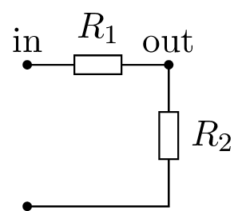
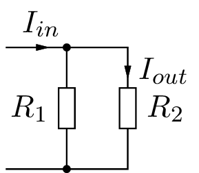

voltage-current-divider.pyvoltage-current-divider.py
####################################################################################################
#!# =============================
#!# Voltage and Current Divider
#!# =============================
#!# This circuit is a fundamental block in electronic that permits to scale a voltage by an
#!# impedance ratio:
#cm# voltage-divider.m4
#!# The relation between the input and ouput voltage is:
#!#
#!# .. math::
#!#
#!# \frac{V_{out}}{V_{in}} = \frac{R_2}{R_1 + R_2}
#!#
#!# This equation holds for any impedances like resistance, capacitance, inductance, etc.
####################################################################################################
import PySpice.Logging.Logging as Logging
logger = Logging.setup_logging()
####################################################################################################
from PySpice.Spice.Netlist import Circuit
from PySpice.Unit.Units import *
####################################################################################################
circuit = Circuit('Voltage Divider')
circuit.V('input', 1, circuit.gnd, 10) # Fixme: V(10) uV(10) 10*V
circuit.R(1, 1, 2, kilo(2))
circuit.R(2, 2, circuit.gnd, kilo(1))
simulator = circuit.simulator(temperature=25, nominal_temperature=25)
analysis = simulator.operating_point()
for node in analysis.nodes.values():
print('Node {}: {:5.2f} V'.format(str(node), float(node))) # Fixme: format value + unit
#o#
####################################################################################################
#!# Similarly we can build a circuit that scale a current by an impedance ratio:
#cm# current-divider.m4
#!# The relation between the input and ouput current is:
#!#
#!# .. math::
#!#
#!# \frac{I_{out}}{I_{in}} = \frac{R_1}{R_1 + R_2}
#!#
#!# Note the role of R1 and R2 is exchanged.
#!#
#!# This equation holds for any impedances like resistance, capacitance, inductance, etc.
####################################################################################################
circuit = Circuit('Current Divider')
circuit.I('input', 1, circuit.gnd, 1) # Fixme: current value
circuit.R(1, 1, circuit.gnd, kilo(2))
circuit.R(2, 1, circuit.gnd, kilo(1))
for resistance in (circuit.R1, circuit.R2):
resistance.minus.add_current_probe(circuit) # to get positive value
simulator = circuit.simulator(temperature=25, nominal_temperature=25)
analysis = simulator.operating_point()
# Fixme: current over resistor
for node in analysis.branches.values():
print('Node {}: {:5.2f} A'.format(str(node), float(node))) # Fixme: format value + unit
#o#
####################################################################################################
#
# End
#
####################################################################################################
2.5.5.2.3. Voltage and Current Divider¶
This circuit is a fundamental block in electronic that permits to scale a voltage by an impedance ratio:
The relation between the input and ouput voltage is:
\[\frac{V_{out}}{V_{in}} = \frac{R_2}{R_1 + R_2}\]
This equation holds for any impedances like resistance, capacitance, inductance, etc.
import PySpice.Logging.Logging as Logging
logger = Logging.setup_logging()
from PySpice.Spice.Netlist import Circuit
from PySpice.Unit.Units import *
circuit = Circuit('Voltage Divider')
circuit.V('input', 1, circuit.gnd, 10) # Fixme: V(10) uV(10) 10*V
circuit.R(1, 1, 2, kilo(2))
circuit.R(2, 2, circuit.gnd, kilo(1))
simulator = circuit.simulator(temperature=25, nominal_temperature=25)
analysis = simulator.operating_point()
for node in analysis.nodes.values():
print('Node {}: {:5.2f} V'.format(str(node), float(node))) # Fixme: format value + unit
Node 2 [voltage]: 3.33 V
Node 1 [voltage]: 10.00 V
Similarly we can build a circuit that scale a current by an impedance ratio:
The relation between the input and ouput current is:
\[\frac{I_{out}}{I_{in}} = \frac{R_1}{R_1 + R_2}\]
Note the role of R1 and R2 is exchanged.
This equation holds for any impedances like resistance, capacitance, inductance, etc.
circuit = Circuit('Current Divider')
circuit.I('input', 1, circuit.gnd, 1) # Fixme: current value
circuit.R(1, 1, circuit.gnd, kilo(2))
circuit.R(2, 1, circuit.gnd, kilo(1))
for resistance in (circuit.R1, circuit.R2):
resistance.minus.add_current_probe(circuit) # to get positive value
simulator = circuit.simulator(temperature=25, nominal_temperature=25)
analysis = simulator.operating_point()
# Fixme: current over resistor
for node in analysis.branches.values():
print('Node {}: {:5.2f} A'.format(str(node), float(node))) # Fixme: format value + unit
Node VR1_minus [current]: 0.33 A
Node VR2_minus [current]: 0.67 A